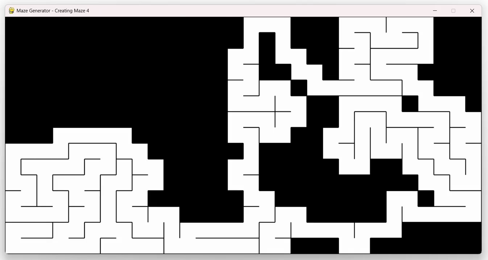
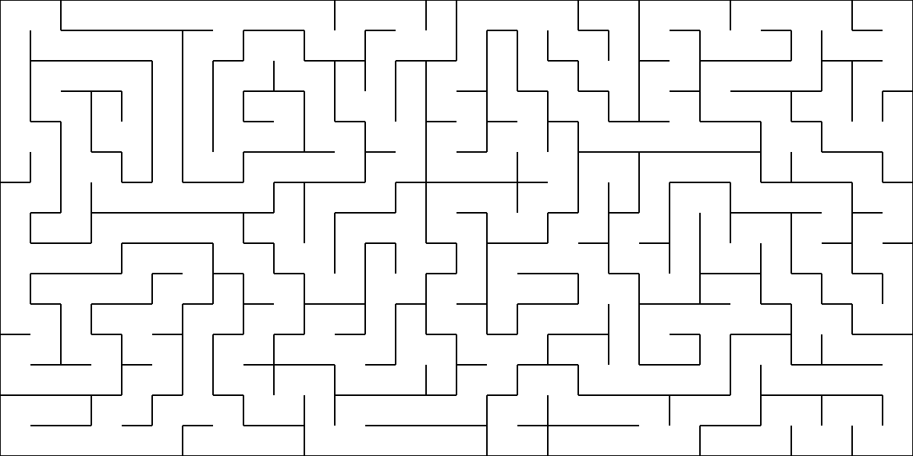
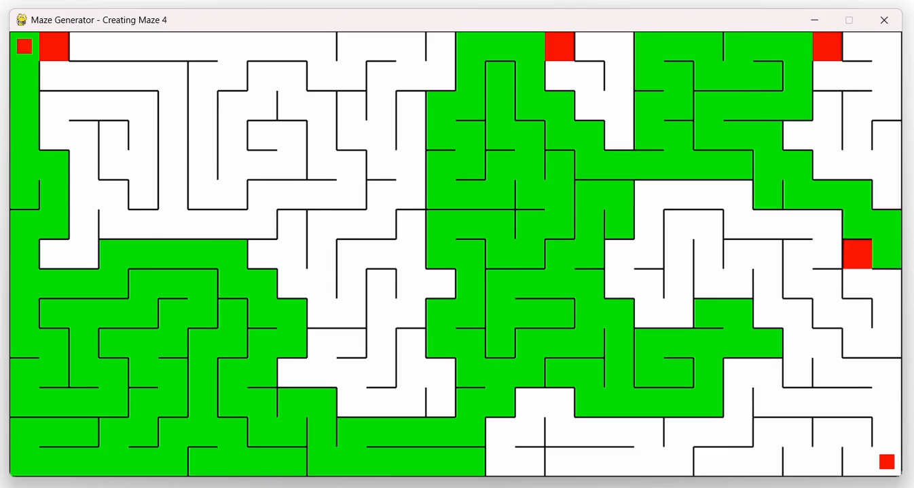
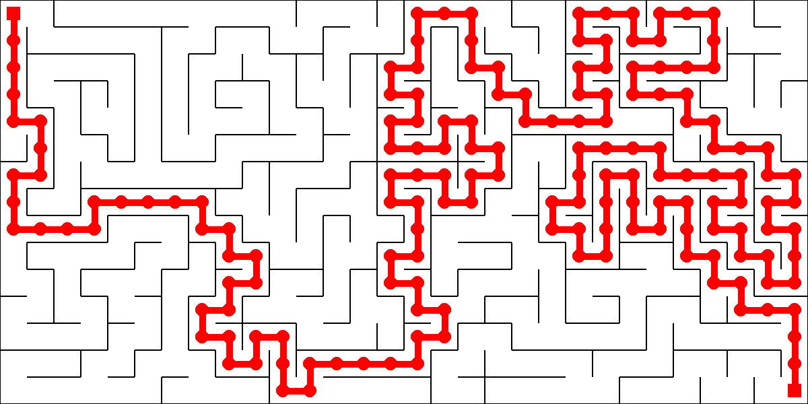

Carving the maze
Every cell starts fully walled in on all 4 sides. Generation works by picking a random unvisited neighbor, knocking down the wall between it and the current cell, and moving there, backtracking through a stack whenever a cell has no unvisited neighbors left.
def visit(self,cells):
self.visited = True
neighbours = []
if self.y != 0:
if not cells[self.y-1][self.x].visited:
neighbours.append(cells[self.y-1][self.x])
if self.y != len(cells)-1:
if not cells[self.y+1][self.x].visited:
neighbours.append(cells[self.y+1][self.x])
if self.x != 0:
if not cells[self.y][self.x-1].visited:
neighbours.append(cells[self.y][self.x-1])
if self.x != len(cells[0])-1:
if not cells[self.y][self.x+1].visited:
neighbours.append(cells[self.y][self.x+1])
if len(neighbours) > 0:
cell = random.choice(neighbours)
return cell.x, cell.y
else:
return None
Picking randomly among unvisited neighbors, and backtracking whenever there are none left, is what makes this "recursive backtracking" as a maze algorithm, it guarantees the result is a perfect maze, exactly one possible path between any two cells, no loops, nothing unreachable.

Solving it
Once generation finishes, the maze immediately gets solved using an open/closed set search, each cell tracks a cost based on distance from the start and estimated distance to the end, and the algorithm always expands whichever open cell looks most promising.
def calculate(self):
self.fromstart = math.sqrt(self.x**2 + self.y**2)
self.fromend = math.sqrt((self.x-end[0])**2 + (self.y-end[1])**2)
self.total = self.fromstart + self.fromendfromstart is the cost already spent getting
here, fromend is a straight-line estimate of
what's left, added together they're A*'s classic f = g
+ h. At every step, the algorithm expands
whichever open cell has the lowest combined score, balancing
"closest to where I've been" against
"closest to where I'm going", rather than blindly exploring
in one direction.

Drawing the solution
Once the end cell is reached, the path gets reconstructed backward by following each cell's parent pointer all the way back to the start, then drawn as a thick red line.

Saving maze images
The fun part of this project isn't the maze algorithm, it's
what happens after it. The moment a maze finishes
generating, and again the moment it's solved, the program
saves the game surface straight to a local
mazes folder.
pygame.image.save(win, os.getcwd() + "\\mazes\\maze " + str(count) + ".png")After capturing the solved version, it generates a brand new one, repeating the whole procedure multiple times.